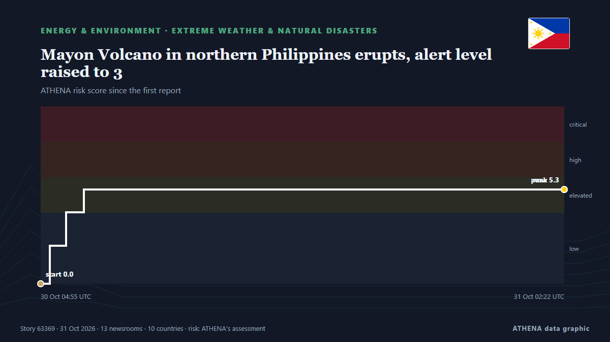

Energie, Rohstoffe und Umwelt
Schlagzeilen werden auf Englisch angezeigt, wie veröffentlicht.

Extremwetter und NaturkatastrophenMayon Volcano in northern Philippines erupts, alert level raised to 3
Residents in Albay province heard a loud boom around noon on Friday (Oct. von Gulf News
| 18. Okt. | 8 |
|---|---|
| 19. Okt. | 50 |
| 20. Okt. | 24 |
| 21. Okt. | 56 |
| 22. Okt. | 86 |
| 23. Okt. | 65 |
| 24. Okt. | 37 |
| 25. Okt. | 67 |
| 26. Okt. | 79 |
| 27. Okt. | 114 |
| 28. Okt. | 84 |
| 29. Okt. | 64 |
| 30. Okt. | 66 |
| 31. Okt. | 1 |
3 Killed as Ukraine Renews Drone Strikes Against Oil Refineries
Deputy Prime Minister Alexander Novak confirmed that Ukrainian drones targeted three oil refineries and one gas chemical complex overnight. von The Moscow Times
Syria flash floods kill at least 5, force hundreds of families from camps
Heavy rain and flash floods left five people dead, including four children, and forced some 375 families to flee displacement camps in Syria’s Raqqa province. von Al-Monitor
Britain bars entry to Swedish academic ahead of appearance with Palestine Action founder
LONDON, Oct 30 - Swedish climate academic Andreas Malm said on Friday he had been denied entry to Britain, where he was due to speak alongside the co-founder of Palestine Action, a group banned as a… von The Straits Times
Inflation heats up again, days before midterm elections
Rising gas prices drove much of the inflation increase as renewed violence in the Middle East has kept oil prices above $100 a barrel, up from below $70 before the Iran war. von PBS NewsHour
Wallenius Wilhelmsen orders four LNG dual-fuel PCTCs
Wallenius Wilhelmsen has ordered four LNG dual-fuel Pure Car and Truck Carriers from China’s Jinling Shipyard and secured options for eight additional vessels. von Container News
Bodies Discovered After Rig Sinks Offshore Gabon
'An underwater remotely operated vehicle has located the bodies of three individuals', Borr Drilling revealed. von Rigzone
US touts role in Gulf oil exports as CENTCOM chief flies over Hormuz Strait
LONDON: The chief of US Central Command, Brad Cooper, flew over the Strait of Hormuz in a CH-47 Chinook helicopter on Sunday as the command said US forces had helped Gulf partners export more than… von Arab News
Brent crude price rises by nearly 2.5% on ICE exchange
As of 1:24 p.m. Moscow time, Brent futures were up 2.45% at $113.51 per barrel. von TASS (English)
Mahama appoints 15 officers of the Ghana Prisons Service
President John Mahama has promoted 15 officers of the Ghana Prisons Service, elevating seven Deputy Directors of Prisons to Directors of Prisons and eight Assistant Directors of Prisons to Deputy… von MyJoyOnline
IAEA says Zaporizhzhia nuclear plant worker killed in drone attack
The plant has repeatedly faced threats to nuclear safety, including drone attacks, disruptions to external power supplies, and incidents affecting plant workers. von Kyiv Independent
Yemeni army investigating reports of Houthi use of toxic gases in Taiz
Military says civilians and resistance fighters suffered suspected poisoning and suffocation after alleged use of toxic substances in projectiles. von Anadolu Agency (English)
Rosatom builds floating nuclear power fleet
Russia's state nuclear corporation Rosatom has begun developing a fleet of floating nuclear power plants for domestic use, CEO Alexey Likhachev said Wednesday on the sidelines of the Russia-Africa… von AzerNews
Europe’s debt stress is hitting corporate borrowing costs. Goldman flags who’s vulnerable
Sovereign debt pressure and heavy bond issuance are raising European corporate borrowing costs, squeezing companies with weaker balance sheets, Goldman said. von CNBC World
Medical experts warn climate change is now a 'global health emergency'
The damage wreaked by climate change on human health is escalating, experts warn, with deaths from heat, drought and other extreme weather rising faster than the world is taking action to limit… von RFI English
Pakistan, Saudi Arabia discuss investment in agriculture, minerals and mining
Finance minister, Saudi envoy also discuss trade, investor confidence and regional economic cooperation. von Express Tribune
QatarEnergy becomes largest buyer of US LNG with new 20-year Woodside deal
QatarEnergy signs a 20-year agreement to buy 3 million tonnes of US LNG annually from Woodside Energy, becoming the largest US LNG buyer. von Arabian Business
Severe thunderstorms expected in parts of KwaZulu-Natal
The SA Weather Service has issued Yellow Level 4 and Level 2 warnings for severe thunderstorms. von SABC News
UK Rules Out Winter Energy Shortages as Gas Prices Soar
There is no risk of power or gas outages during this winter in the UK, as there will be sufficient generation and gas supply, the National Energy System Operator has said in its early winter outlook. von OilPrice.com
Six killed in cyclone off India's eastern coast
A cargo vesselwith 20 crew members was grounded off the coast of Andhra Pradesh remained stalled on Thursday. von Express Tribune
5.2-magnitude quake hits Vanuatu Islands -- GFZ
SYDNEY, Australia (AFP)—A 7.2 magnitude earthquake off Vanuatu triggered a tsunami warning on Saturday, the Pacific Tsunami Warning Centre said. von Jamaica Observer
Trump’s Russian diesel deal benefits Moscow more than US consumers, experts say
Trump’s diesel deal gives Moscow cash and leverage, while Ukraine is pressed to give up one of its few advantages on the battlefield and in negotiations, experts and U.S. lawmakers said. von Defense News
Girl seriously injured in wolf attack at German wildlife park
The eight-year-old was in an enclosure with other children and a staff member when she was attacked. von BBC News
Russians kill man in Zaporizhzhia Oblast and attack public transport in Zaporizhzhia for third time in one day – video
A Russian attack killed a 49-year-old man in Bilenke and injured three, while an FPV drone hit a bus in Zaporizhzhia in the third strike in one day. von Ukrainska Pravda (English)
Photos: Aftermath of deadly Cyclone Arnab in southern India
Andhra Pradesh may witness light showers on October 25 and 26, while much of the cyclone-induced rainfall activity likely to begin on October 27. von The Hindu
Russia to Extend Diesel Export Ban, Use Quotas to Fulfill U.S. Deal, Sources Say
The current ban on diesel exports is due to expire on Oct. von The Moscow Times
Price of Brent oil up above $114 per barrel on ICE first since May
The price of futures contracts of WTI crude oil reached $100.97 per barrel. von TASS (English)
'Taxpayers will expect answers' over Storm Boelo £117m Renfrew Bridge damage
Winds as strong as 60km/h are forecast to sweep across the UAE this week. von Arabian Business
Sri Lanka suffers nationwide electricity blackout
Sri Lanka suffered a nationwide electricity blackout on Saturday after the national grid tripped, possibly because solar power generation exceeded consumption, officials said.The c... von Oman Observer
Tanzania announces first major natural gas discovery in a decade
Tanzania has announced its first natural gas discovery in a decade, with an estimated 223 billion cubic feet found at the Kasa-1X ST2 well in the Mnazi Bay area. von Africanews (English)
UAE oil spill: Sharjah closes all beaches as clean-up effort continues
UAE authorities are working to contain an oil spill from a supertanker in the Arabian Gulf, with Umm Al Quwain Municipality intensifying efforts to limit pollution and protect marine habitats. von The National
Iraqi PM al-Zaidi in Damascus to Discuss Oil, Economic Ties
Iraqi Prime Minister Ali al-Zaidi met Syrian President Ahmed al-Sharaa in Damascus to discuss economic, oil and security cooperation, including the Banias pipeline. von Kurdistan24 (English)
Trump-Putin diesel deal has not lowered US fuel prices – WSJ
US diesel prices have risen by 7 cents since Trump announced a deal with Russia on fuel supplies. von Ukrainska Pravda (English)
Oil prices fall as peace hopes offset fears of growing Middle East conflict
Oil prices fell on Thursday, paring gains made a day earlier, as hopes for peace talks took the edge off renewed concerns over Middle East supply disruptions from escalating regional conflict. von Business Recorder
Oil prices decline after diplomatic push in Iran war
Oil prices declined on Thursday as traders assessed new diplomatic efforts in the Middle East, aimed at averting potential US military action against Iran. von The National